a-1123584
Full circular face; the round green door, brass knob and stone step read instantly at 96 px, with clean glossy enamel, a thin bright rim and no text or baked frame.
Motif: A round green hobbit door with a brass knob and a stone step, warm lamplight glowing through the crack beneath the door.
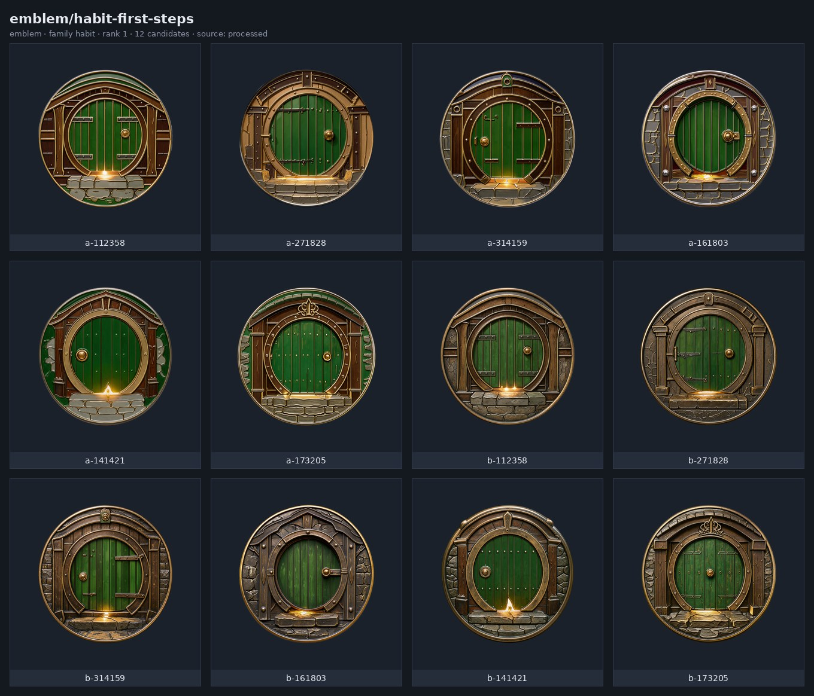
a-1123584Full circular face; the round green door, brass knob and stone step read instantly at 96 px, with clean glossy enamel, a thin bright rim and no text or baked frame.
b-1414214.5Recommended
Aged bronze door face is centred and fully circular; the warm crack glow and stone step stay legible at 96 px, slightly darker than the a variant but artifact-free.
Notes: B has the full door, step and margin with aged metal; A is cropped at the arch and brighter than the habit frame.
Motif: A small wooden ferry carrying one glowing lantern on stylised dark water, beside a weathered mooring post.
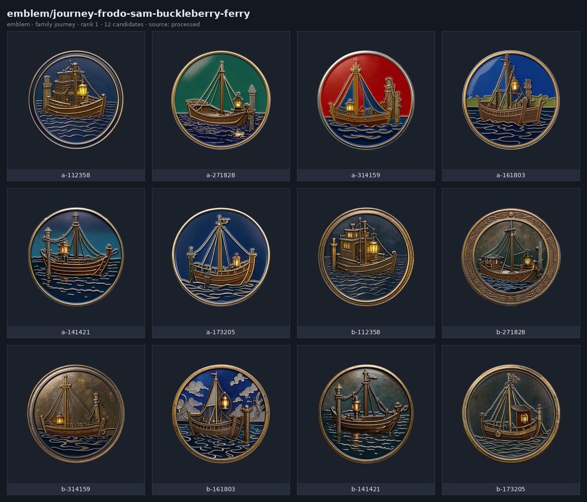
a-2718284.5Recommended
Full circular green-and-navy ferry badge; hull, single lantern and mooring post read clearly at 96 px, with crisp enamel, a clean gold rim and no text.
b-1414214
Aged metal ferry on dark water; the full circle and lantern/hull silhouette remain readable at 96 px, lower contrast than the a variant but clean with no baked border ring.
Notes: b-271828 rejected: baked ornate engraved border ring. b-161803 has a cloud/landscape background; b-141421 is the cleanest aged option.
Motif: A broken ring of standing stones around a blazing torch, with scattered embers rising.
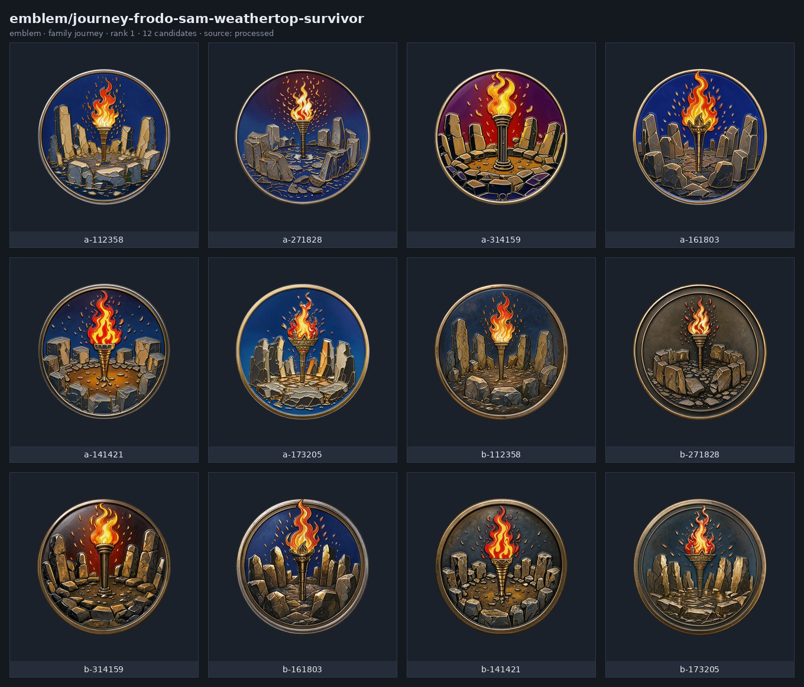
a-1618034.5Recommended
Full circular torch-and-standing-stones badge; flame, torch shaft and broken stone ring read strongly at 96 px, with clean enamel, a thin rim and no text on the torch rerun.
b-1618034
Aged-metal torch scene, fully circular; flame and stones remain legible at 96 px, darker patina than the a variant but with no text or artifacts.
Notes: a-161803 has the strongest flame silhouette; b-161803 is the best aged alternative.
Motif: An arched stone doorway carved with an interlacing silver tree-and-crown motif, seven small silver stars above the arch and two holly branches flanking its base, the silver lines woven smoothly into the stone.
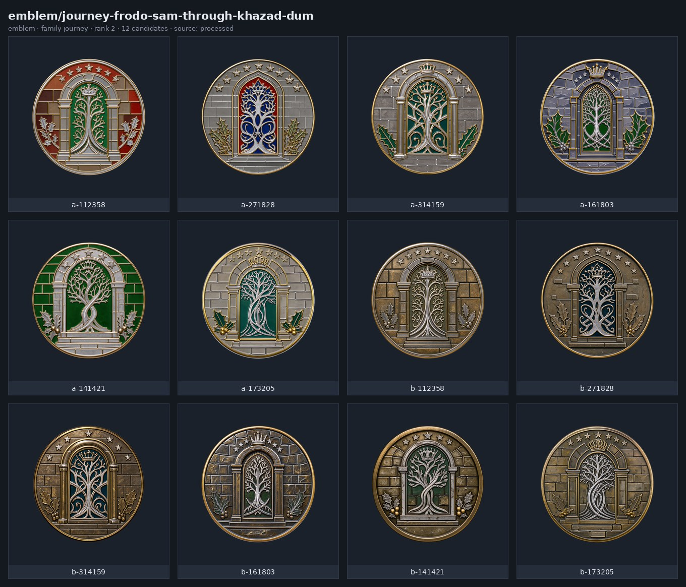
a-2718284.5Recommended
Full circular arched-door badge; the silver tree, crown and seven stars read at 96 px, with clean grey stone, a blue door and a crisp gold rim, no text.
b-1123583.5
Aged bronze arched door, fully circular; the tree-and-crown motif reads but the silver tree is low contrast against the grey door; no text or baked frame.
Notes: b-161803 rejected: signature-like squiggle below the step. a-173205 is a clean alternate if a brighter second a variant is preferred.
Motif: A cluster of golden mallorn leaves on a pale silver branch.
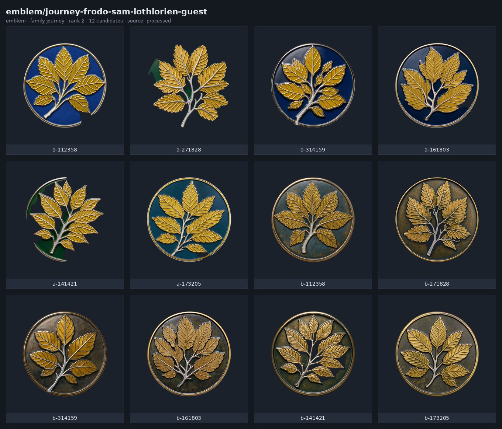
a-3141594.5Recommended
Full circular navy badge; the gold mallorn leaf cluster on a pale silver branch reads instantly at 96 px, with clean enamel, a thin silver rim and no text.
b-1618034
Aged bronze disc with gold leaves and a pale silver branch; the full circle and leaf silhouette stay clear at 96 px, darker patina but artifact-free.
Notes: a-112358 rejected: broken disc with a transparent bite. a-271828 rejected: loose sprig with no badge face. a-141421 rejected: broken crescent face.
Motif: A cloven silver-bound horn above a crescent of falling water.
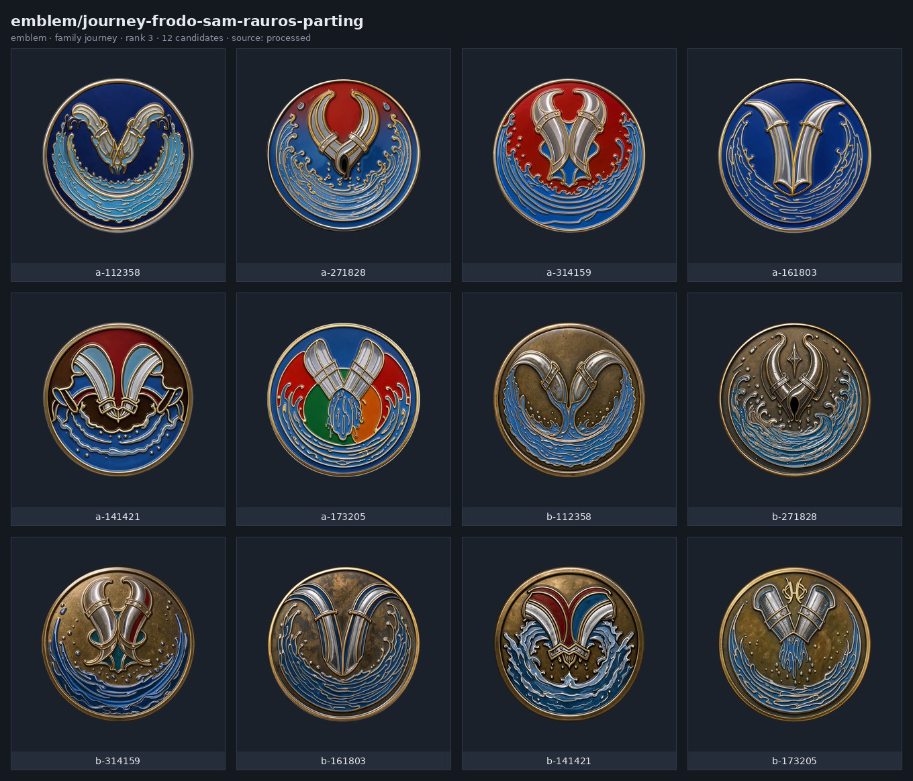
a-1123584Recommended
Full circular blue badge; the cloven horn halves and falling-water crescent read at 96 px, with clean enamel, a gold rim and no text.
b-1618034
Aged metal version with larger horn halves and a strong water crescent; fully circular and clean at 96 px, with no text or baked frame.
Notes: Tie 4.0/4.0: A is polished blue, B is aged silver-blue. No set-coherence preference; pick on material.
Motif: A black volcanic cone split by a molten fissure, circled by a thin ring of embers.
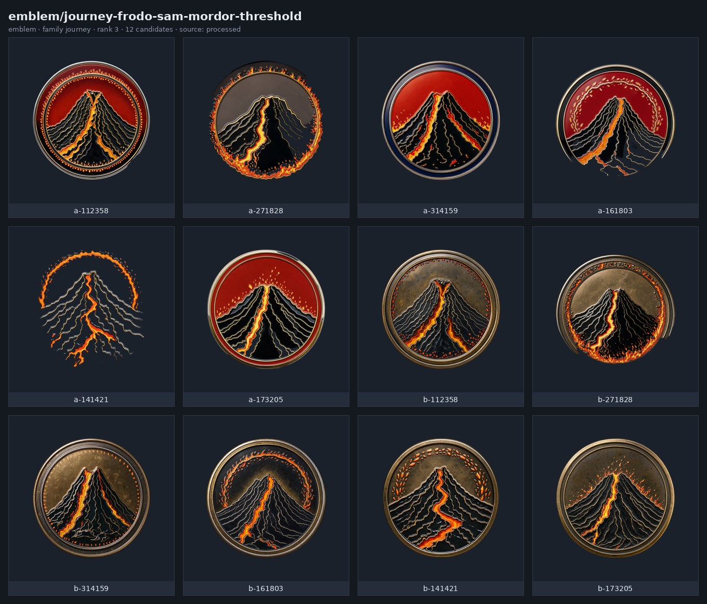
a-1732054.5Recommended
Full circular red-sky badge; the black volcanic cone and molten fissure read strongly at 96 px, with a clean ember ring, gold rim and no text.
b-3141594
Aged bronze cone with a molten fissure and ember ring; the full circle and cone silhouette stay strong at 96 px, darker patina but clean and artifact-free.
Notes: a-161803 and b-271828 rejected: broken/non-circular outer face with large transparent gaps. a-112358 is a clean alternate but its dotted ember ring is busier.
Motif: A round hobbit door with lit windows and a rose trellis, low sunset rays behind the round door.
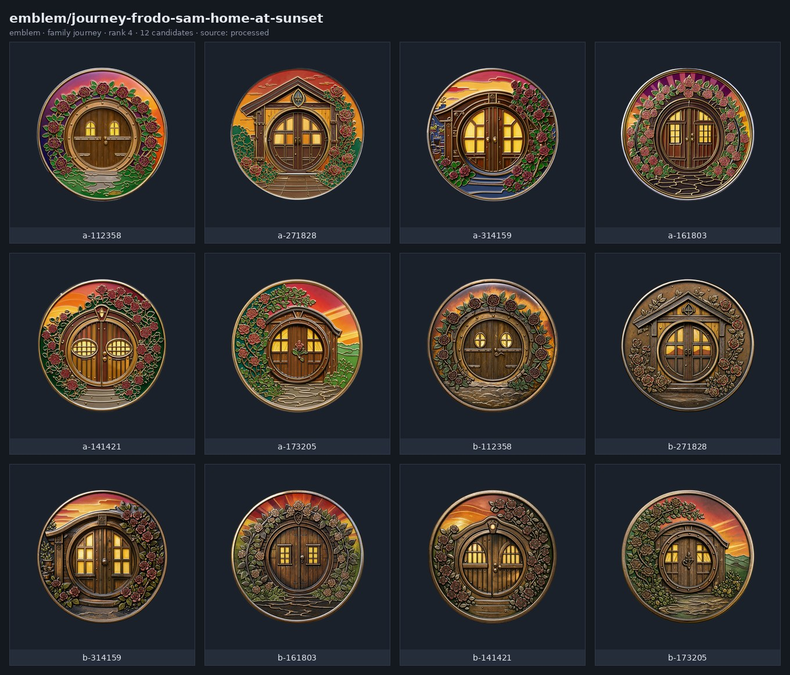
a-1123583.5
Full circular sunset badge; the round door, lit windows and rose wreath read at 96 px, with clean enamel, a thin gold rim and no text.
b-1618034.5Recommended
Aged bronze door with a rose wreath and sunset sky; fully circular and legible at 96 px, darker patina but clean and artifact-free.
Notes: Set-coherence pick: B is aged bronze with an amber/rust sunset and muted roses; A is the pastel magenta outlier.
Motif: A winding path marked by seven milestone stones, with a planted walking staff at its end.
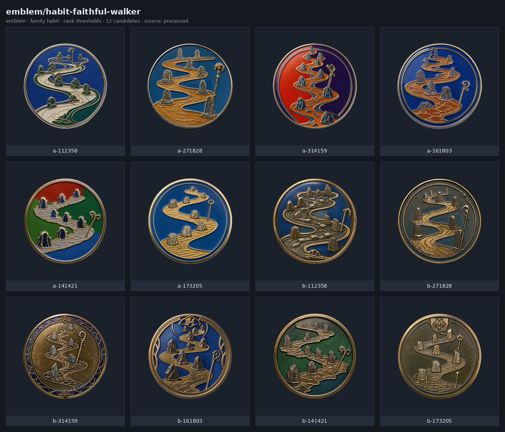
a-1732054.5Recommended
Full circular blue badge; the winding path, milestone stones and planted staff read at 96 px, with clean enamel, a gold rim and no text.
b-1123583.5
Aged metal path scene, fully circular; the staff and stones read but the path is low contrast at 96 px; no text or baked frame.
Notes: b-314159 rejected: baked ornate border ring. a-112358 is a clean alternate with a green foreground.
Motif: A cavern of luminous crystal columns rising from still dark pools, carved Dwarf stone-gardens and a single warm lantern glow, silver-blue and gold.
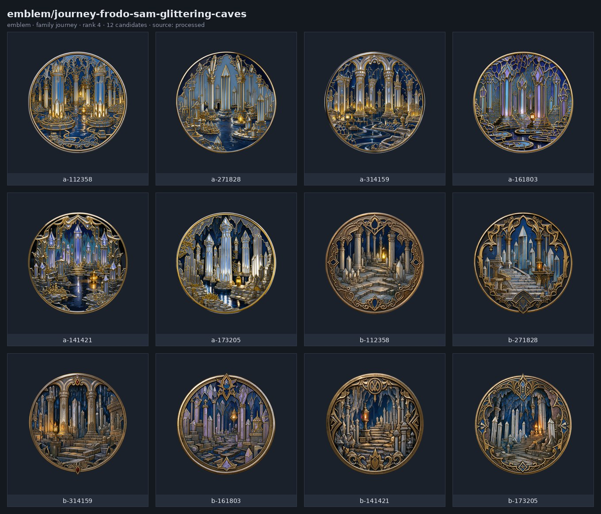
a-2718284.2
Wide cavern-city vista with a single warm lantern, fine gold linework and a thin bright rim; the densest of the clean options but still reads as a Dwarf hall at 96 px.
a-1732054.6Recommended
Thin-rim cave scene with one foreground lantern, a dominant crystal tower and clear water reflections; the cleanest and most legible Glittering Caves composition at 96 px.
Notes: a-173205 is the cleaner small-size read with a single lantern; a-271828 is the wider vista. All b variants rejected for heavy gothic/engraved border rings; a-112358, a-141421, a-314159 and a-161803 rejected for multiple lanterns or overloaded foregrounds.
Motif: Two milestone stones flanking a winding path, a sun on one side and a crescent moon on the other, fresh green and gold.
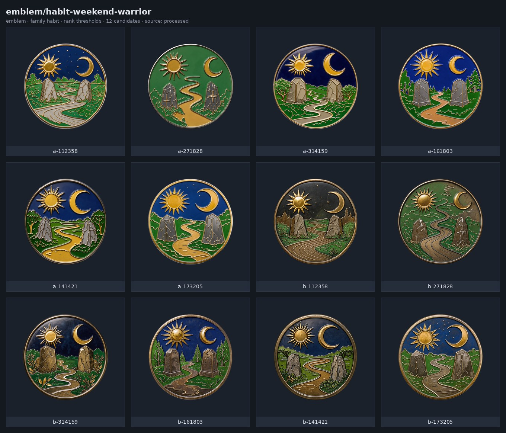
a-1414214.5Recommended
Polished enamel with a bold sun, crescent moon and S-curved path balanced between the two standing stones; the thin rim and clear colour blocks hold up at 96 px.
b-2718284
Aged bronze-and-green take on the same balanced sun/moon/path composition; the muted patina lowers contrast but stays clean and artifact-free.
Notes: a-173205 is a close polished alternate; b-271828 supplies the aged-material counterpart. b-112358 is too dark and b-161803 loses the green field.
Motif: A circular ring of twenty small milestone stones around a central walking staff, deep forest green and gold.
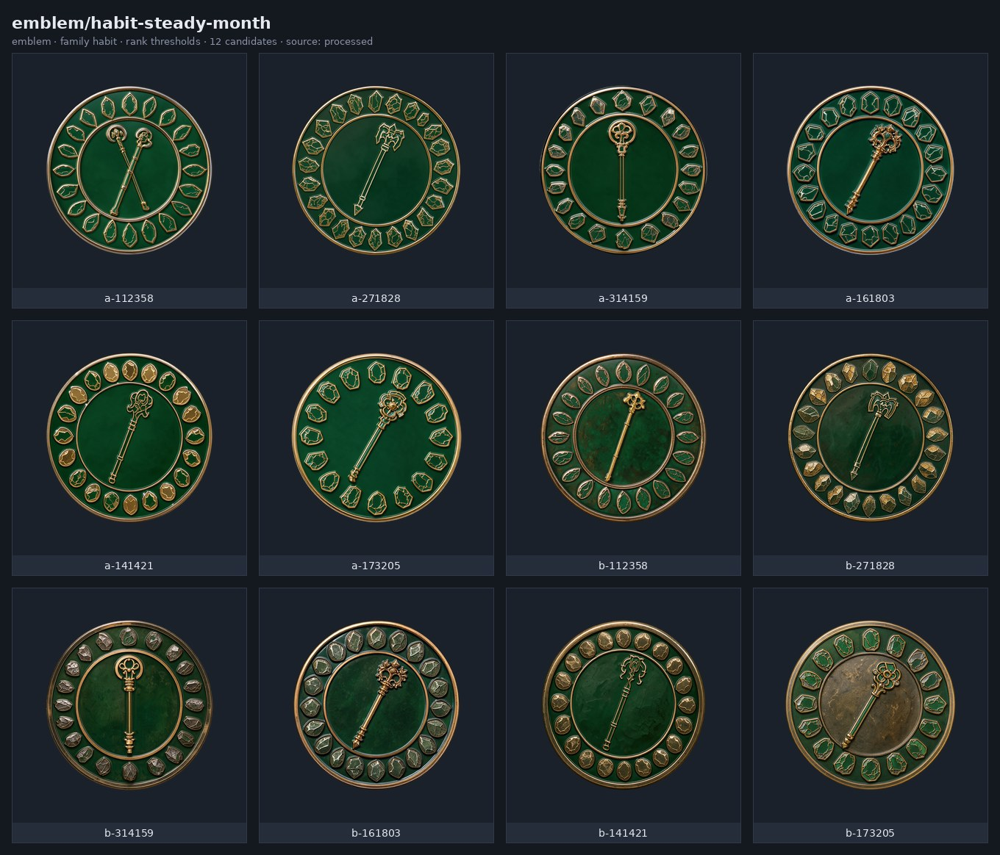
a-2718284.5Recommended
Even ring of twenty gold-rimmed green stones around a deep green enamel field, with an ornate diagonal staff; the cleanest polished read of the monthly cycle.
b-1618034
Aged bronze version keeps the twenty-stone ring and diagonal staff with a classic key head; richer patina and a slightly busier rim than A.
Notes: The central object reads as a key/scepter rather than the intended walking staff in both finalists. a-112358 rejected for crossed twin staffs; b-314159 reads as a clock hand; a-173205 is a close alternate.
Motif: A path spiralling around a central compass rose, seven small milestone stones along the way, deep blue and gold.
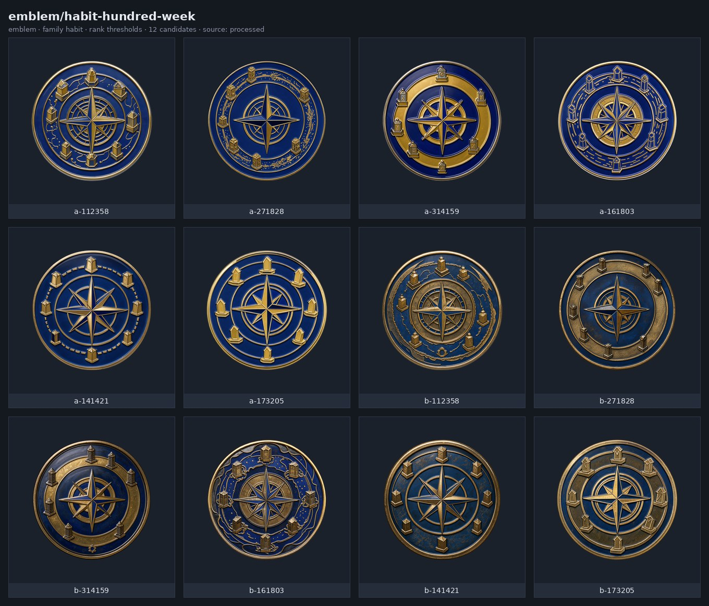
a-1123584.5Recommended
Polished deep-blue field with a crisp compass rose, concentric orbit rings and eight gold milestone markers; strongest contrast and cleanest 96 px silhouette.
b-1618034
Aged blue-and-bronze version keeps the compass rose, orbit rings and marker circle; warm patina and slightly softer contrast than A.
Notes: Both read as a compass with an orbit ring, not the prompted spiral, and show eight milestone markers rather than seven. a-173205 is a close polished alternate; b-141421 is the darker aged option.
Motif: A central standing stone carved with a flame, flanked by two smaller standing stones, warm bronze and gold.
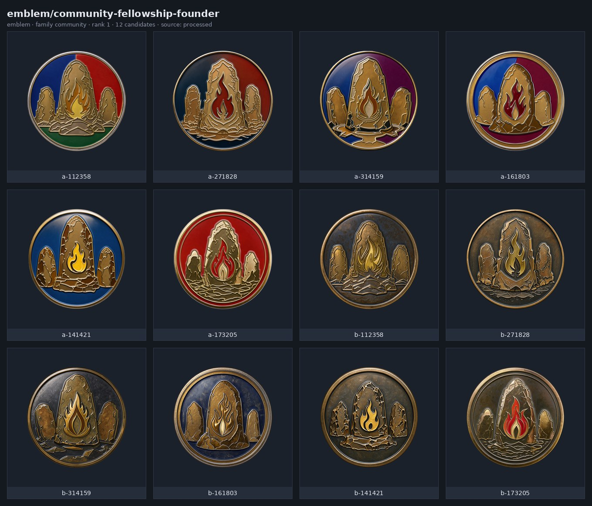
a-1414214.5Recommended
Solid blue enamel field sets off the flame-carved central stone and two flankers, with crisp gold outlines and no split-colour flag background.
b-2718284
Full aged-bronze treatment with a ghosted gold flame and chased stone relief; lower contrast than A but the most cohesive aged option.
Notes: a-112358 and a-161803 rejected for split blue/red fields that read as flags; a-173205 loses the flame against a red field. b-161803 is a close aged alternate with a blue field.
Motif: Four standing stones around a central campfire flame, warm bronze and gold.
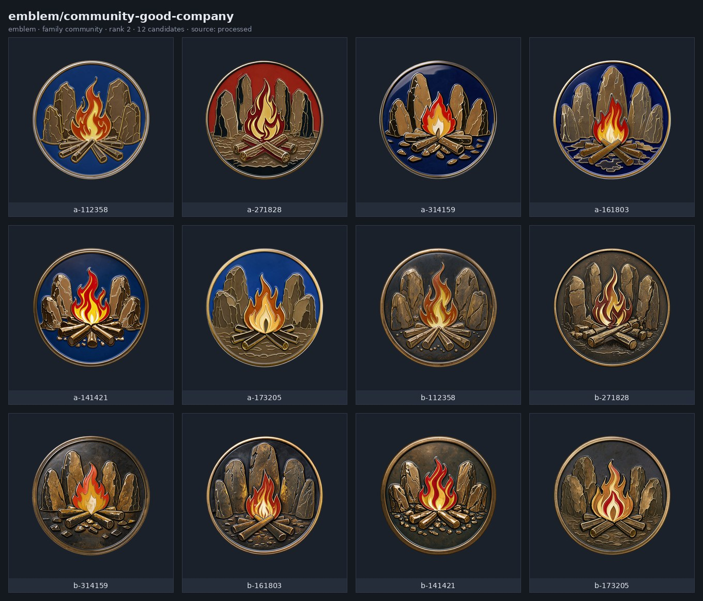
a-1123584.5Recommended
Deep blue field makes the red-orange campfire and crossed logs pop, with four standing stones and a thin rim; the strongest 96 px read of the set.
b-2718284
Aged bronze field with a warm red-gold flame and chunky logs; richer patina and slightly lower contrast, but artifact-free.
Notes: b-161803 is a close aged alternate; a-141421 has heavier outlines and a less crisp flame; a-271828's red field competes with the fire.
Motif: An empty circular ring frame: a broad braided band of gold and dark steel with engraved leaves and weathered notches, enclosing a completely hollow, empty, flat black centre.
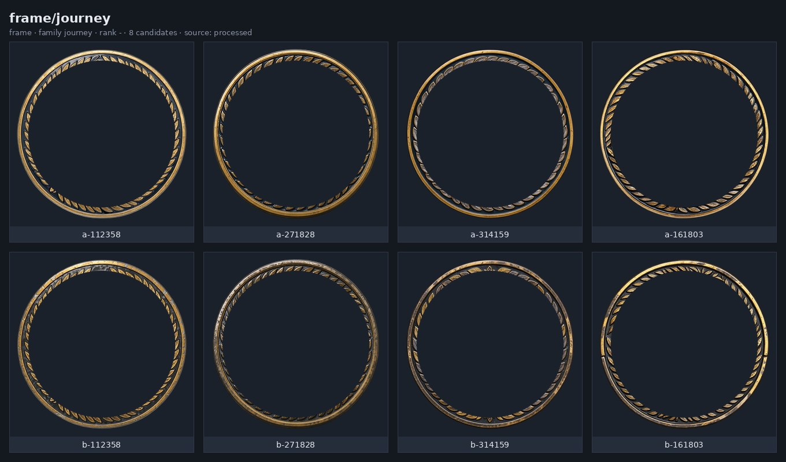
a-2718284.5Recommended
Hollow laurel-wreath ring with an even gold-and-steel band; the inner opening is clean and centred, with no gap or filled centre.
b-1123584
Aged gold laurel ring, continuous and hollow; the band is even and the opening clean, with a patina that still reads at 96 px.
Motif: An empty circular ring frame: a broad brushed steel band with seven evenly spaced notches and a thin copper inner line, enclosing a completely hollow, empty, flat black centre.
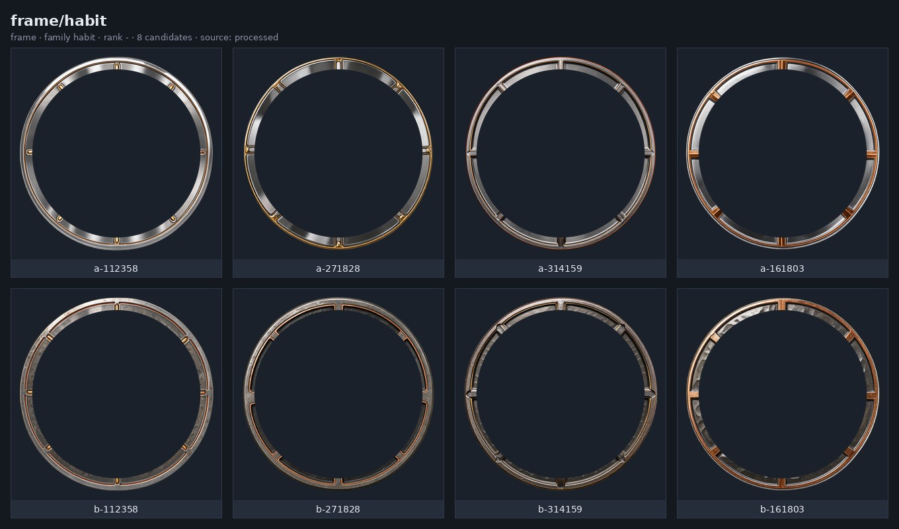
a-1123584.5Recommended
Hollow brushed-steel ring with seven notches and a thin copper inner line; the band is even and the opening clean, with no gap or filled centre.
b-3141594
Aged hammered-steel ring with the same notch rhythm; the band is continuous and the hollow centre clean, with no artifacts.
Motif: An empty circular ring frame: a broad black iron band split by molten red cracks with hooked barbs, enclosing a completely hollow, empty, flat black centre.
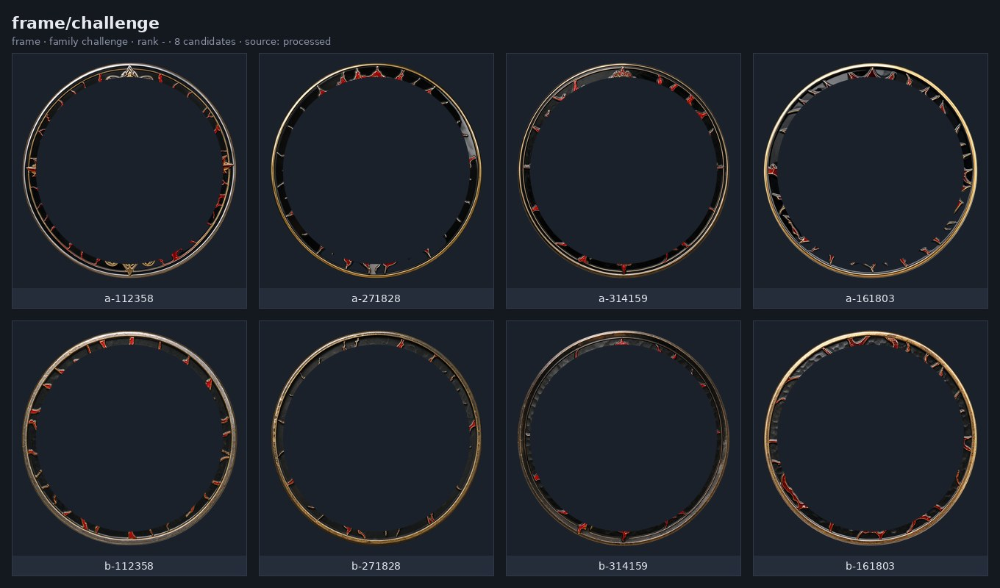
a-1123584Recommended
Hollow black-iron ring with molten red cracks and symmetric gold barbs; the band is continuous and the opening clean, with no text.
b-1618034
Aged black-iron ring with red cracks and a gold rim; continuous, hollow and evenly weighted, with a strong 96 px read.
Notes: A has the finer barb motif; B reads stronger at 96 px because its band is broader. Pick on the final frame weight.
Motif: An empty circular ring frame: a broad embossed dark leather band with gold filigree, small page-corner tabs and a brass clasp, enclosing a completely hollow, empty, flat black centre.
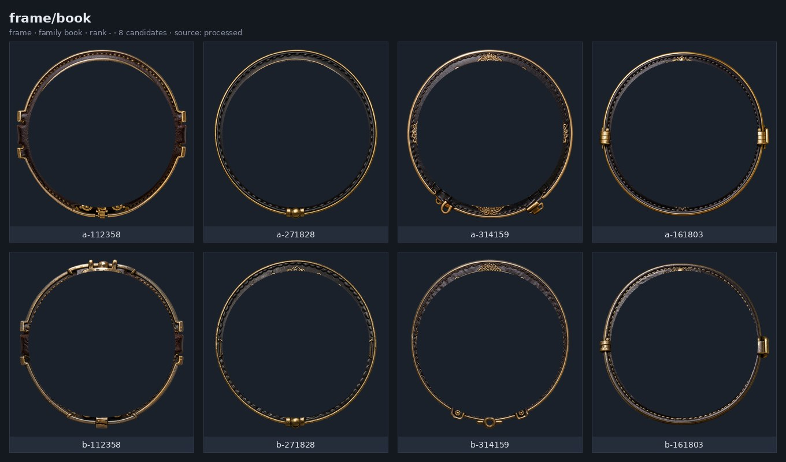
a-2718284.5Recommended
Hollow leather-and-gold filigree ring with a small centred clasp; the band is even and the opening clean, with no side tabs or filled centre.
b-2718284
Aged leather ring with gold filigree and a centred clasp; the hollow band is continuous and clean, with a darker but artifact-free patina.
Notes: Chosen over the side-tab seeds (a-112358, a-161803, b-112358, b-161803), which protrude and shrink the ring.
Motif: An empty circular ring frame: a broad warm bronze band of interlocking knotwork with small round studs and woven clasp motifs, enclosing a completely hollow, empty, flat black centre.
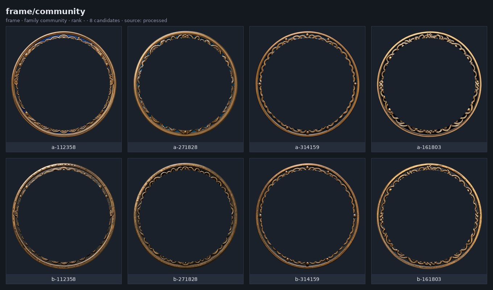
a-3141594.5Recommended
Hollow bronze knotwork ring; the band is continuous and even with a well-defined opening and a clean 96 px read, no text.
b-2718284
Aged bronze knotwork with small studs; the hollow band is continuous and the opening clean, with a darker patina but no artifacts.
Motif: An empty circular ring frame: a broad aged brass band set with pressed leaves, seed pods and small rivets, enclosing a completely hollow, empty, flat black centre.
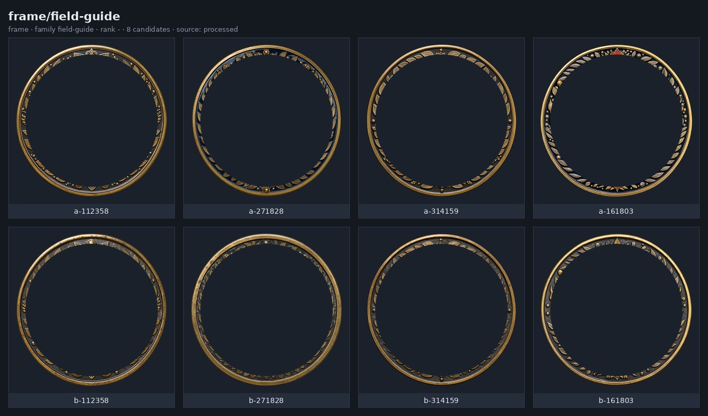
a-3141594.5Recommended
Hollow aged-brass ring with pressed leaves; the band is even and the opening clean, with no protrusions and a crisp 96 px silhouette.
b-2718284
Aged brass leaf ring with a darker patina; the hollow band is continuous and the opening clean, with no text or filled centre.
Motif: A thin circular rank band with three evenly spaced round studs, warm bronze, softly worn, enclosing a completely hollow, empty, flat black centre.
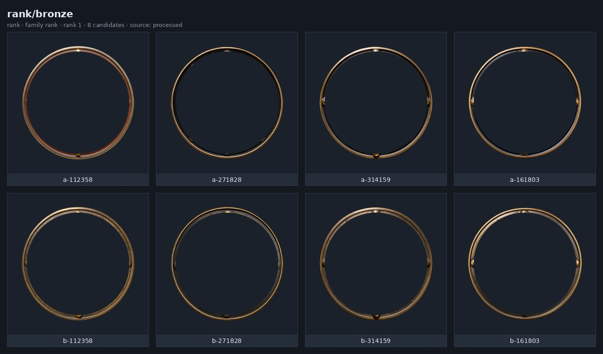
a-3141594Recommended
Thin hollow bronze band with three round studs and a bottom clasp; continuous and evenly weighted, with no gap or filled centre.
b-1618033.5
Aged bronze band with the same three-stud rhythm; continuous and hollow, though the patina lowers contrast at 96 px; no artifacts.
Motif: A thin circular rank band with four evenly spaced round studs, polished silver, bright edge, enclosing a completely hollow, empty, flat black centre.
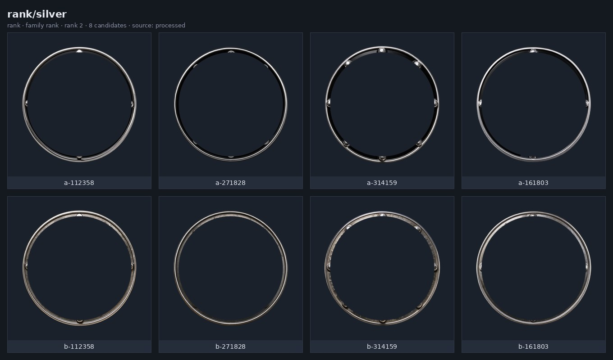
a-1123584.5Recommended
Bright silver band with four evenly spaced studs; continuous, hollow and crisp at 96 px, with no gap and no text.
b-1123584
Aged silver band with four studs; continuous and hollow, with a softer patina but clean, even weighting.
Notes: a-314159 rejected: six studs instead of the specified four.
Motif: A thin circular rank band with five evenly spaced round studs, deep gold, beaded edge, enclosing a completely hollow, empty, flat black centre.
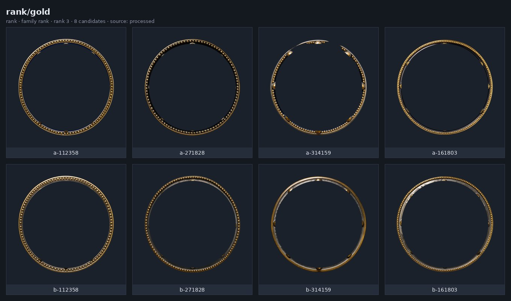
a-1618034.5Recommended
Deep-gold beaded band with five round studs and a bottom clasp; continuous, hollow and clean at 96 px, with no gap.
b-2718284
Aged gold beaded band with five studs; continuous and hollow, with a darker patina but the rank colour still reads.
Notes: a-314159 rejected: visible gap at 12 o'clock. a-112358 has a blue enamel band; b-314159 has a steel inner band.
Motif: A thin circular rank band with six evenly spaced round studs, pale blue-white elven metal, faint cool glow, enclosing a completely hollow, empty, flat black centre.
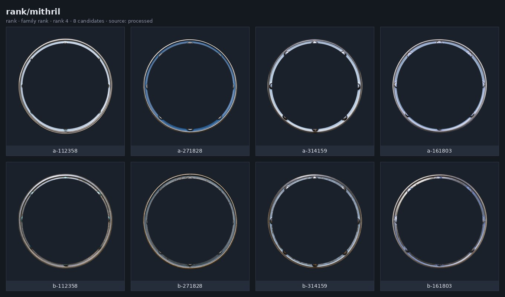
a-3141594.5Recommended
Pale blue-white mithril band with six evenly spaced studs; continuous, hollow and crisp at 96 px, with no gold contamination.
b-2718283.5
Aged pale-silver band with six studs; continuous and hollow, though the cool glow is weaker at 96 px; the rank colour is still correct.
Notes: a-271828 and b-314159 rejected: gold/brass rims contradict the mithril set.